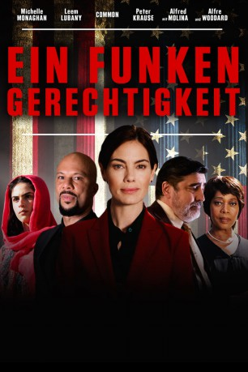
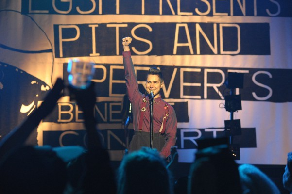
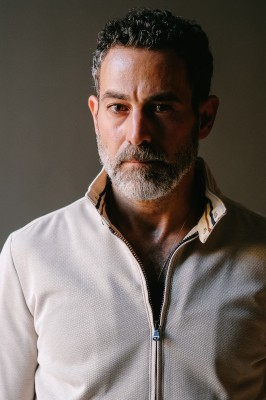
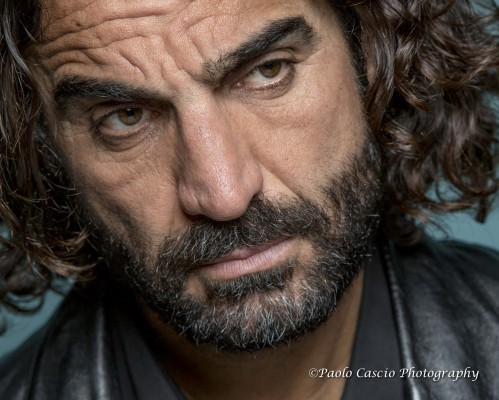

#12158 Ein Funken Gerechtigkeit
Alternativ: Saint Judy (Englischer Titel)
 
 IMDB-Wertung: 5.8 / 10
IMDB-Wertung: 5.8 / 10  Tomatometer: 60
Tomatometer: 60  Metascore: 51
Metascore: 51 
Basierend auf wahren Begebenheiten: Anwältin Judy Wood vertritt eine afghanische Frau, die vor den Taliban flüchtet und in den USA Schutz sucht. Als sich der Kampf in erster Instanz zuspitzt, bekommt Wood die Gelegenheit vor das amerikanische Höchstgericht zu treten... dabei schreibt sie Geschichte.
Jahr: 2018
Dauer: 105 Minuten
FSK: 12
Land: USA Studio: Blue Fox EntertainmentTonspuren: DTS - ,
Untertitel: Deutsch,
Auflösung: 1080p (1920x1040) Größe: 6809 MB
Genre: Drama, Biographie
Regisseur: Sean Hanish
Drehbuch: Dmitry Portnoy
Soundtrack: James T. Sale
Darsteller:
 Michelle Monaghan als Judy Wood
Michelle Monaghan als Judy Wood- Leem Lubany als Asefa
 Common als Benjamin Adebayo
Common als Benjamin Adebayo Alfred Molina als Ray Hernandez
Alfred Molina als Ray Hernandez Alfre Woodard als Judge Benton
Alfre Woodard als Judge Benton-  Ben Schnetzer als Parker
 Gabriel Bateman als Alex Wood
Gabriel Bateman als Alex Wood-  Waleed Zuaiter als Omar
 Mykelti Williamson als Dikembe Mustafa
Mykelti Williamson als Dikembe Mustafa- Peter Krause als Matthew
 Aimee Garcia als Celi
Aimee Garcia als Celi Kevin Chapman als Officer King
Kevin Chapman als Officer King Gil Birmingham als Michael Bowman
Gil Birmingham als Michael Bowman- Roxie Hanish als Young Asefa
 Rob Brownstein als Prosecutor
Rob Brownstein als Prosecutor-  Fahim Fazli als Taliban Leader
- Samira Izadi als Asefa's mother
- Kim Strother als Ginny Bell
- Allel Aimiche als Asefa's Father
 Anne Betancourt als Judge Ortiz
Anne Betancourt als Judge Ortiz- Rafaella Biscayn als ADR
- John Bueno als Native American Son
- Semere-Ab Etmet Yohannes als Grandpa - Judy's Pakistani Immigrant Client
- Michael Hagiwara als Judge Nakazawa
 Mustafa Haidari als Taliban
Mustafa Haidari als Taliban Peter Jason als Judge O'Neil
Peter Jason als Judge O'Neil- Pablo Ramos als Detainee
- Mike Tarnofsky als Skolnick
- Marley S. Ward als Sofia
- Anthony Castellana als Himself - Jury member
- Madison Myers als Detainee
- Nathan O'Donovan als Relative
- Di Vinci SanTana als Alex's Friend
- Victor A Zaragoza Jr als Carlos - Taco Chef
- Damon Gonzalez als Afghan Villager (uncredited)
- Omar Kenawi als Afghan Man (uncredited)
Datei: X:\2018(A-F)\Funken Gerechtigkeit, Ein (2018, FSK12, 1920x1040).mkv seit 30.12.2019
Festplatte: HD 2017(A-Z)-2018(A-F)
 Es gibt insgesamt 151 Filme in der Gruppe '2018(A-F)'
Es gibt insgesamt 151 Filme in der Gruppe '2018(A-F)'